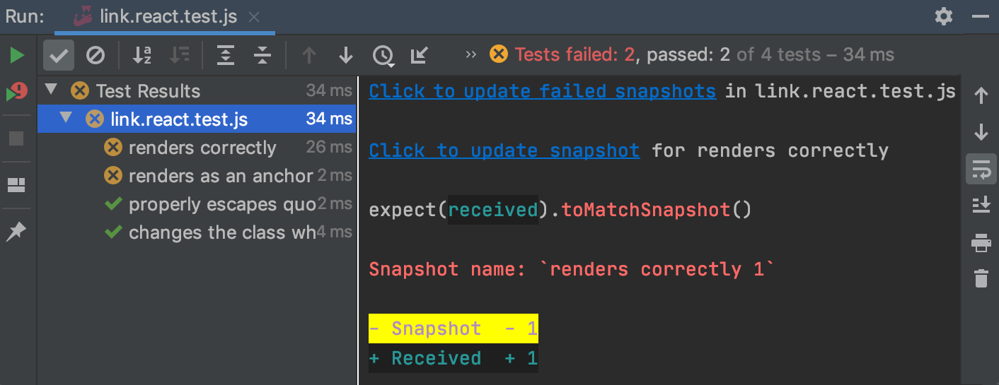

JavaScript
Lektion 5
Hybrid-Apps
Rückblick
Übersicht Lektionen
- Vorstellung, Einführung und Aufsetzen von Werkzeugen
- MVVM, Bindings, Controls, Debugging
- Dialogs, Styling, IOC, Testing
- Benachrichtigungen (Lokal/Push/Remote)
- Hybrid-Apps
- Security & Biometrie
- Datenbanken (SQLite); Logging
- LK1; Projektarbeit
- MLZ Präsentationen; Themen nach Wahl
Vor dem wir mit DOM beginnen...
Können wir die Typenerkennung verbessern?
Warum geht das nicht richtig?
JSDoc & Generics
Die JSDoc-Definition ist nicht wirklich generisch und führt zu Problemen in die Typ-Erkennung.
- Das kann man mit TypeScript verbessern!
- Wir bleiben bei JavaScript für Code, ergänzen die Typen in JSDoc mit TypeScript
*.d.ts Definitionen
- VSC und WebStorm erkennen und setzen
*.d.tsDateien für Modulen ein - In
crud.d.tsschreibt man TypeScript Definitionen für die Typen incrud.js
Für weitere Infos, siehe:
- Linting your TypeScript Codebase
- TypeScript: JSDoc Reference
- A quick introduction to “Type Declaration” files and adding type support to your JavaScript packages (2020)
- JSDoc & Generic types. Typescript (2019)
- How to run typescript-eslint on .ts files and eslint on .js files in the same project in VSCode (2019)
ESLint & TypeScript
- ESLint erkennt
*.tsDateien noch nicht richtig - Wir installieren TypeScript, um ESLint auch in den Definitionsdateien benutzen zu können
- In einem Terminal
npm i --save-dev typescript @typescript-eslint/parser @typescript-eslint/eslint-plugin @tsconfig/recommendedausführen
ESLint Konfiguration
.eslintrc.jsonDatei mit folgenden overrides ergänzen
{
"overrides": [
{
"files": [ "**/*.ts", "**/*.tsx" ],
"plugins": [ "@typescript-eslint" ],
"extends": [
"eslint:recommended", "prettier", "plugin:@typescript-eslint/recommended"
],
"parser": "@typescript-eslint/parser",
"parserOptions": {
"project": [ "./tsconfig.json" ]
}
}
]
}
TypeScript Konfiguration
tsconfig.jsonDatei mit folgendem Inhalt erstellen
{
"extends": "@tsconfig/recommended/tsconfig.json",
"compilerOptions": {
"sourceMap": true
},
"exclude": [
"node_modules"
]
}
Definition einsetzen
- Typ des Variables mit JSDoc beschreiben
- Wird von VSC und WebStorm richtig erkannt und angewendet
JSDoc, ESLint & TypeScript
- Definitionsdatei für
crud.jserstellen - ESLint mit TypeScript einrichten
main.jsverbessernaddressdefinieren und einsetzen

Fragen?

DOM
Hier geht es um Elemente aus dem Dokument selektieren, manipulieren und darauf zu reagieren.
- Einführung
- Lesen
- Modifizieren
DOM: Einführung
- DOM ist ein generelles, vom W3C standardisiertes Zugriffsmodell
- DOM ist eine Hierarchie
- Das
documentObjekt ist die Wurzel des Baums
Quelle für das Diagramm: HTML DOM Diagram, Coded Example and Explanation
DOM: Der Kern
DOM: ein riesiges API
- Das DOM-API ist vielfältig; wir schauen die Basics an
- Aufgaben können auf unterschiedliche Art und Weise erledigt werden (z.B. CSS-Klasse setzen)
button.setAttribute("class", "primary"); // oder...
button.className = "primary"; // oder...
button.classList.add("primary"); // oder...
const attr = document.createAttribute("class");
attr.value = "primary";
button.attributes.setNamedItem(attr);
Jest mit DOM
- Jest unterstützt DOM nur in die
jsdomUmgebung - Die Umgebung kann pro Datei eingeschaltet werden
- Oben in der Datei kann die
@jest-environmentmit einem Kommentar gesetzt werden
/**
* @jest-environment jsdom
*/
import { describe, expect, test } from "@jest/globals";
Element-Typen
| Element | Entspricht ein Tag im Dokument |
|---|---|
| Attribut | Entspricht ein Attribut eines Tags |
| Text | Entspricht Text zwischen Elementen (inkl. Whitespace) |
| Kommentar | Entspricht ein HTML Kommentar |
Siehe Node für weitere Information und anderen Typen.
Element Eigenschaften
Können gelesen und geschrieben werden
id |
Eindeutiger Name |
|---|---|
tagName |
Name des Tags im Dokument |
className |
Text-Repräsentation von allen CSS-Klassen |
classList |
Liste von allen CSS-Klassen |
style |
Alle auf dem Objekt definierten CSS-Styles |
innerHTML |
Text-Repräsentation allen Unterelementen |
outerHTML |
Text-Repräsentation vom Tag mit Unterelementen |
Element Eigenschaften
Können gelesen und geschrieben werden
children |
Alle Unterelementen (nur Tags) |
|---|---|
firstElementChild |
Erstes Unterelement (nur Tags) |
lastElementChild |
Letztes Unterelement (nur Tags) |
childNodes |
Alle Unterelementen (Alle) |
firstChild |
Erstes Unterelement (Alle) |
lastChild |
Letztes Unterelement (Alle) |
"Alle" entspricht ein Tag, Text oder Kommentar Element
Elemente lesen
getElementById() |
Liefert das Element mit einem bestimmten ID |
|---|---|
getElementsByTagName() |
Liefert alle Elemente eines Tags |
getElementsByClassName() |
Liefert alle Elemente mit einem or mehreren CSS-Klassen |
Lesen: Beispiel
const btn1 = document.getElementById("a");
const [btn2] = document.getElementsByTagName("button");
const [btn3] = document.getElementsByClassName("primary");
// btn1 === btn2 === btn3
// btn1.id == "a"
Elemente selektieren
querySelector() |
Liefert das erste Element für einen CSS-Selektor |
|---|---|
querySelectorAll() |
Liefert alle Elemente für einen CSS-Selektor |
Siehe CSS-Grundlagen und CSS Selektoren (MDN) für eine CSS-Einführung bzw. Auffrischung.
Einfaches Selektieren
const btn1 = document.querySelector("#a");
const [btn2, btn3] = document.querySelectorAll("button");
// btn1 === btn2
// btn1.id == "a"
// btn3.id == "b"
Komplexeres Selektieren
Unterstützt Kombinationen von CSS-Selektoren
const span = document.querySelector(
"div > button#a > span.strong"
);
// span.className == "strong"

Das API ist echt riesig!
...also, tief durchatmen. Holt euch einen Tee 🍵. Macht's euch gemütlich. Wir steigen durch!*
*Für die, die MaiLab kennen...
DOM: textContent
textContententspricht dem Text-Inhalt eines Elements
const element = document.getElementById("a");
// element.textContent == "Test"
DOM: HTML Text
outerHTMLentspricht dem HTML-formatierten Inhalt eines ElementsinnerHTMLentspricht dem HTML-formatierten Inhalt aller Unterknoten eines Elements
const [btn] = document.getElementsByTagName("button");
// btn.innerHTML == "Test"
// btn.outerHTML == ""
style
- Alle auf dem Objekt definierten CSS-Styles
const links = document.getElementsByTagName("a");
for (const link of links) {
const style = link.style;
style.fontSize = "12px";
style.textDecoration = "underline";
style.textOverflow = "ellipsis";
console.log(window.getComputedStyle(link));
}
DOM: Attributen
attributes |
Liste alle Attributen |
|---|---|
getAttribute() |
Liefert das Attribut mit einem bestimmten Namen |
hasAttribute() |
true wenn ein Attribut mit einem bestimmten Namen vorhanden ist |
setAttribute() |
Setzt oder ersetzt ein Attribut |
DOM: Hinzufügen
createTextNode() |
Erstellt einen neuen Textknoten |
|---|---|
createElement() |
Erstellt ein neues Element |
appendChild() |
Fügt ein Element am Ende der Liste hinzu |
cloneNode(deep) |
Erstellt eine Kopie eines Elements |
insertBefore() |
Fügt ein Element vor einem anderen hinzu |
replaceChild() |
Ersetzt ein bestehendes Element |
DOM: Löschen
removeChild() |
Entfernt ein Element aus einer Sub-Liste |
|---|---|
removeAttribute() |
Entfernt ein Attribut |
remove() |
Entfernt eine Element selbst |
DOM: "data" Attributen
- Attributen mit Präfix "data-" sind erlaubt
- Auf dem Element als
datasetverfügbar - Wert ist ein
Mapvon allen Attribut-Werten mit Suffix als Schlüssel
const element = document.getElementById("a");
// element.dataset == DOMStringMap {test: 'a', data: 'c'}
DOM
- Lesen
- Selektieren
- Erstellen
- Ändern
Fragen?
Übungen
- Element selektieren und dessen Inhalt anpassen
- Daten vom Server abfragen und einem Dokument hinzufügen

Ereignisse
Hier geht es um Ereignisse aus der Laufzeitumgebung abzufangen und darauf zu reagieren.
- Beispiele
- Abfangen
- Reihenfolge
- Unterdrücken
Ereignisse: Generell
| onclick | Element wurde geklickt |
|---|---|
| onmouseenter | Maus schwebte über das Element |
| onmouseleave | Maus schwebte weg vom Element |
| onkeypress | Taste wurde betätigt |
| oninput | Wert wurde geändert |
Siehe GlobalEventHandlers für eine vollständige Liste.
Ereignisse: Laden
| Name | Beschreibung | Target |
|---|---|---|
| onload | Alle Ressourcen eines URLs wurden fertig geladen | window |
| DOMContentLoaded | Dokument wurde fertig geladen | document |
Ereignisse abfangen
- Ereignisse werden vom Browser ausgelöst.
- Z.B. Mausklicks oder -bewegungen, Wert-Änderungen, usw.
- Mögliche Ereignisbehandlungsmethoden:
- 🤨 Attribut auf dem Element
- 🤨 EventHandler
- 😎 EventListener
Ereignisobjekt
target |
Auslösendes Element |
|---|---|
currentTarget |
Element mit EventHandler |
timeStamp |
Zeitpunkt des Ereignisses |
view |
Referenz auf window (oder frame) |
offsetX/offsetY |
relative Mausposition |
onclick Attribut
- 😎 Ist klar welcher Script ausgeführt wird
- 🤨 Wird im globalen Kontext ausgeführt
- 🤨 Mischt Darstellung mit Logik
- 🤨 Führt zu dupliziertem Code
- 🤨 Obsoleter Zugriff auf dem Ereignisobjekt
onclick EventHandler
- 😎 Wird im Funktionskontext ausgeführt
- 😎 Darstellung und Logik sind separat
- 😎 Meidet dupliziertes Code
- 🤨 Überschreibt andere EventHandlers
const buttons = document.getElementsByTagName("button");
for (const button of buttons) {
button.onclick = e => console.log(e.target.id);
}
click EventListener
- 😎 Wird im Funktionskontext ausgeführt
- 😎 Darstellung und Logik sind separat
- 😎 Meidet dupliziertes Code
- 😎 Lässt andere EventListeners stehen
const buttons = document.getElementsByTagName("button");
for (const button of buttons) {
button.addEventListener("click", e => console.log(e.target.id));
}
Funktionen und this
function |
this referenziert das Ereigniselement |
||||
|---|---|---|---|---|---|
=> |
this referenziert das umliegende Kontext
|
EventListener: Entfernen
- Listeners können mit
removeEventListener()entfernt werden - Dazu ist eine fixe Referenz nötig (z.B. eine Funktion)
const logId = e => console.log(e.target.id);
const button = document.getElementById("a");
button.addEventListener("click", logId);
button.removeEventListener("click", logId);
Funktionen: Kurzform
Bei einer benannten Funktion kann man das auflisten von Parametern weglassen, wenn die Parameter einfach weitergegeben werden sollen.
const log = e => console.log(e);
// Die folgende Aufrufe sind Equivalent
document.AddEventListener("click", e => console.log(e))
document.addEventListener("click", e => log(e));
document.addEventListener("click", log);
Event Reihenfolge
- Normalerweise werden Ereignisse bei allen "Parent"-Elementen ausgelöst
- In
addEventListenerkann man mit dem Setzen des dritten Parameterscaptureauftruesicherstellen, dass das Ereignis zuerst bei diesem Element ausgelöst wird. - Mit
stopPropagation()kann man das propagieren verhindern
Event Flow
"Capture" zuerst und danach "Bubbling"

Normale Reihenfolge
Elemente fangen Events in die "Bubbling" Phase ab.
const log = e => console.log(e.currentTarget.nodeName);
document.addEventListener("click", log);
form.addEventListener("click", log);
button.addEventListener("click", log);
Bei einem Klick auf dem Button kommt:
BUTTON
FORM
#document
Angepasste Reihenfolge
Elemente können in die "Capture" Phase Events abfangen.
const log = e => console.log(e.currentTarget.nodeName);
document.addEventListener("click", log, { capture: true });
form.addEventListener("click", log);
button.addEventListener("click", log);
Bei einem Klick kommt:
#document
BUTTON
FORM
Propagieren verhindern
stopPropagation()bricht Event-Handling ab
const log = e => {
console.log(e.currentTarget.nodeName);
e.stopPropagation();
};
document.addEventListener("click", log, { capture: true });
form.addEventListener("click", log);
button.addEventListener("click", log);
Bei einem Klick kommt:
#document
Default Verhalten
preventDefault()unterdrückt das Default Verhalten des Browsers (z.B. Navigieren bei einemaElement)
DuckDuckGo
const duckDuckGo = document.getElementById("search");
duckDuckGo.addEventListener("click", e => {
if (!confirm("Are you sure?")) {
e.preventDefault();
}
});
Ereignisse
- Event Handlers
- Event Listeners
- Reihenfolge
- Propagieren verhindern
- Default verhindern
Fragen?
Übungen
- Klick-Handler für ein Button schreiben
- Klick-Handler für ein Link schreiben
Jest Snapshots
- Die Funktion
toMatchSnapshot()speichert die Erwartung in einer Datei - Beim ersten Ausführen wird die Datei einfach geschrieben
test("initialize", async () => {
const l = document.getElementById("l");
await new application().initialize();
expect(listItems.innerHTML).toMatchSnapshot(); // <-- Snapshot
});
Updating Snapshots
- Bei Änderungen schlägt der Test fehl
- Snapshots aktualisieren mit
jest -uim Terminal - WebStorm zeigt Links im Test-Runner an
